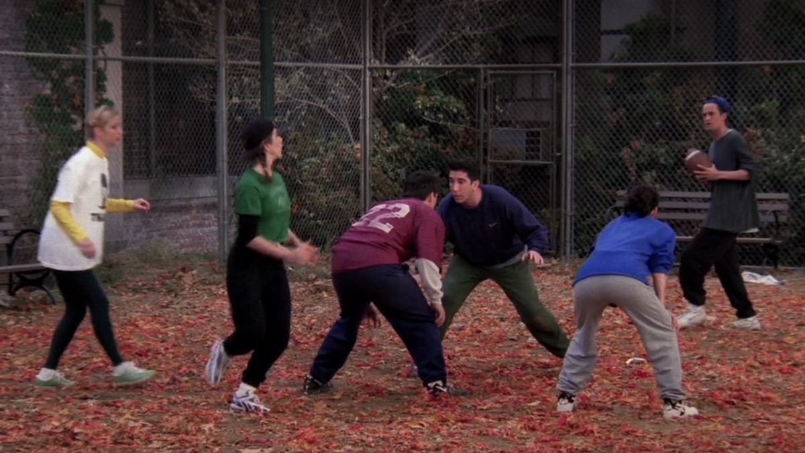

A terceira temporada assume um formato serializado
significativamente maior. Rachel começa a trabalhar
na Bloomingdale's, uma cadeia de lojas de departamento
de luxo, e Ross fica com ciúmes de seu colega de trabalho,
Mark. Rachel decide dar um tempo no namoro, e Ross, ferido
e embriagado, dorme com alguém, fazendo com que Rachel
rompa com ele.
Após acreditar que não tem família, exceto
sua irmã gêmea Ursula, Phoebe conhece seu
meio-irmão Frank Buffay Jr. e sua mãe de nascimento.
Joey desenvolve um relacionamento com sua parceira
de cena Kate, e Monica começa um relacionamento com
o milionário Pete Becker. Joey constroi o "Unit", um armário
para a sala maior que a parede, bloqueando a porta de seu quarto
e de Chandler.
Melhores episódios:
- "Aquele do Flashback" (03x06)
- "Aquele com o Instrumento para Cutucar" (03x08)
- "Aquele do Futebol Americano" (03x09)
- "Aquele em que Ross e Rachel dão um Tempo" (03x15)
- "Aquele com o Pintinho e o Pato" (03x21)
